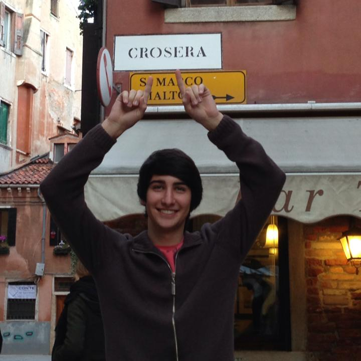

Shani is a master's student at the Univeristy of South Florida studying Business Analytics and Information Systems. She is currently working as a Data Governance Analyst Intern at CUNA Mutual Group. Shani discovered her love for data while working towards her Bachelor's degree in Mathematics.
For this project, Shani took on the role of leader and helped to create the landing page, the navigation bar, and an external CSS file that was applied to this site.
Armand Araque - Assistant-Leader
Armand Araque was born in Miami, Florida and raised in Houston, Texas. He recieved his bachelor's degree in Management from Florida State University
and is currently a graduate student in the MS Business Analytics and Information Systems program at the University of South Florida. Armand recently
completed an internship with the United Soccer League working as a Club Services Intern and is currently working remotely as an Administrative Assistant
at 21 Media, located in Houston, Texas. Armand has a strong passion for sports and hopes to pursue a career in sports analytics upon graduation.
For this project, Armand contributed by creating and styling the contact page, building a couple of the recipes with our team's recipe template,
and formatting parts of the recipe page. The creation of this website was a true team effort, and each member helped each other throughout the project.
o
Vitor Crosera - Member

Vitor Assuncao Crosera was born in Sao Paulo, Brazil. He is finishing his master's degree in Business Analytics and Information Systems.
His bachelor's degree was also in Business Analytics at University of South Florida and he is working as a developer for Badcock Furniture and More in Mulberry, FL.
For this project, Vitor contributed with the analytics page, but we all helped each other with the whole project.
Caitlin Salerno - Member
Caitlin is a Florida-born 22 year old who graduated from the University of South Florida with a bachelor's
degree in Statistics. She is currently pursuing her master's degree in Business Analytics
and Information Systems at the University of South Florida, and is working as a
Software Quality Specialist at Bausch and Lomb while in school. In her free time, Caitlin
enjoys creative or adventurous activities such as woodburning, hiking, painting and hunting.
For this project, Caitlin was the contributer of the recipe template used to create web pages for
the recipes seen on this website. She also used this template to create the majority of these delicious
recipes.